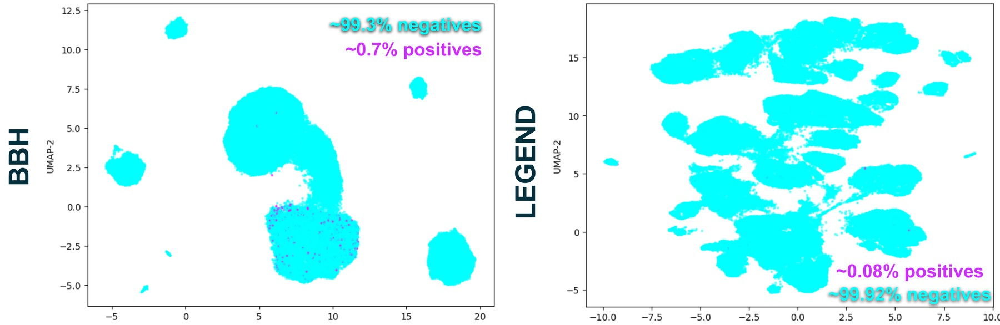
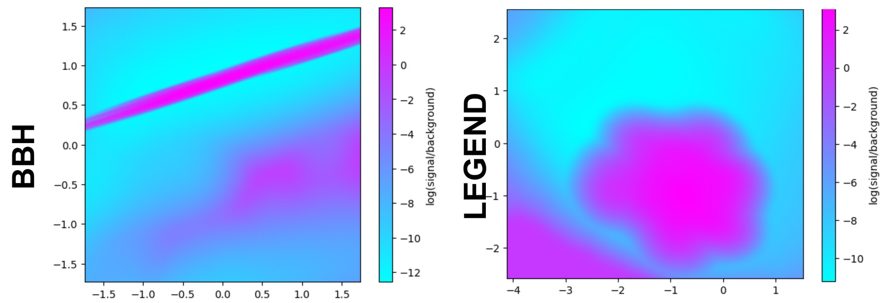

Conditional Monte Carlo needs each event’s hit probability. Learning it means training on data in which fewer than 0.1% of events are hits.
Hits are rare, not unusual: they come from the same process as the background and sit inside it in feature space. Outlier detection and standard representation learning fail.
Models that learn small local differences in density, judged by precision and calibration rather than accuracy, and checked on independent simulations.
1 · Class imbalance
99.9% accurate, always wrong
With one hit per thousand events, the model that never predicts a hit looks excellent.
In Estimating rare-event probabilities, I show that averaging each event’s hit probability, instead of counting hits, can reduce the statistical error of a rare-event estimate by orders of magnitude. That only helps if the hit probability can be learned. In practice it is learned from simulations in which hits are extremely rare, and that makes training a very different problem from a typical classification task.
The examples on this page come from my own simulations, mainly the binary-black-hole population study described in Digging in spacetime: massive stars and black holes. There, about 0.7% of the simulated events are hits; in a LEGEND detector simulation, which also appears below, it is 0.08%.
Take one million simulated events, of which 0.1%, or 1,000, are hits. A model that labels every event as a miss gets 999,000 of them right:
Now take a model that does find something: it catches half the hits, but also flags 1% of the misses. That is 500 true hits and 9,990 false alarms. Its accuracy drops to 98.95%, lower than the model that never tries, and only 1 in 21 flagged events is a real hit.
Accuracy rewards getting the majority right, and in the rare-event regime the majority is the background. The useful questions are different: what fraction of the real hits does the model find, and what fraction of what it flags is real?
$$\text{recall} = \frac{\mathrm{TP}}{\mathrm{TP}+\mathrm{FN}}, \qquad \text{precision} = \frac{\mathrm{TP}}{\mathrm{TP}+\mathrm{FP}}$$
TP: hits flagged as hits. FN: hits missed. FP: misses flagged as hits. Neither depends on the large number of correctly rejected misses.
A model that guesses at random has a precision equal to the hit rate itself, here 0.1%. Precision–recall curves therefore show directly how far a model is above chance, while accuracy, and to a lesser extent the ROC curve, are dominated by the easy majority.
2 · The goal
Probabilities, not labels
For conditional Monte Carlo, a good ranking is not enough. The numbers themselves have to be right.
Conditional Monte Carlo does not ask the model to decide whether an event is a hit. It asks for the hit probability \(p(\theta,\phi)\) of each event, given the design \(\theta\) and the event conditions \(\phi\), and then averages it. The model has to be calibrated: among events assigned a probability of 2%, about 2% should be hits.
The usual training loss for probabilities, the log loss, has its own version of the accuracy trap. A model that ignores the input and predicts the base rate of 0.1% for every event reaches a log loss of about 0.008, which looks very small:
$$-\bigl[\,0.001\ln 0.001 + 0.999\ln 0.999\,\bigr] \approx 0.0079$$
That model is even calibrated on average, but it has learned nothing about how the hit probability depends on the design or on the event. Averaged in conditional Monte Carlo, it simply returns the base rate it was trained on. Almost all of the loss comes from the misses, so improvements on the few hits barely move it.
3 · Feature space
Rare is not anomalous
Hits and misses come from the same generative process, so they occupy the same regions of feature space.
A common response to imbalance is to treat the rare class as an anomaly: model the background, and flag whatever does not fit. That works when the rare events look different, like a defective part on a production line. In physics simulations they usually do not.
A neutron that is captured in a germanium detector and one that is not start from the same distributions of position, direction and energy, and follow the same physics. A binary star system that ends as a merging black-hole pair and one that does not are drawn from the same population model. Whether an event becomes a hit is decided by many random steps along the way. The rare events are statistically scarce, not geometrically isolated.

With no clean separation, distance-based methods and outlier detectors have nothing to find: a hit is not far from its neighbours, it is surrounded by misses that look almost the same. What differs is the local proportion of hits, which may rise from 0.05% in one region to 1% in another. That is a twentyfold change in the hit probability, and still a small minority in both places.
4 · The right target
The likelihood ratio
What separates hits from misses is a ratio of densities, not a boundary.
If \(p_s(x)\) is the density of hits in feature space and \(p_b(x)\) the density of misses, the quantity that carries all the information about whether an event at \(x\) is a hit is their ratio. By the Neyman–Pearson lemma, no test separates the two classes better than one based on it. With the base rate \(\pi\), it also gives the hit probability directly:
$$r(x) = \frac{p_s(x)}{p_b(x)}, \qquad P(\text{hit}\mid x) = \frac{\pi\, r(x)}{\pi\, r(x) + 1 - \pi}$$
A calibrated hit probability and the likelihood ratio contain the same information.

Methods that learn this ratio, for example classifiers trained to tell hits from misses and then used as density-ratio estimators, capture exactly the subtle local differences that matter. They work well when there are large samples of both classes. In the rare-event regime there are not: with 0.08% hits, as in the LEGEND simulation, even a million simulated events provide fewer than a thousand examples of \(p_s\). The ratio is then least certain in the regions where hits are rarest, which are often the regions that decide the result.
5 · Benchmarks
Where standard methods fail
Every method family fails for its own reason, and the reasons point to what a working model needs.
I benchmarked the main families of the machine-learning toolbox on the binary-black-hole dataset from Digging in spacetime, in which about 0.7% of the simulated events are hits: anomaly detectors, generative and representation-learning models, conditional neural processes with and without imbalance remedies, contrastive learning, a tabular transformer and gradient-boosted trees. All were scored by their precision–recall curves, since accuracy is meaningless here.
![Precision–recall curves for several methods. Autoencoder, variational autoencoder, conditional neural process, attentive conditional neural process and isolation forest fall to near-zero precision almost immediately. A normalizing flow does only slightly better. A conditional neural process with mixup or with focal loss keeps some precision up to about 50 to 60 percent recall. A contrastive InfoNCE model and an FT-Transformer do better, and a boosted decision tree stays close to a precision of 1 up to almost full recall. A dotted line marks a precision of 0.4 at about 48 percent recall.](assets/precision-recall.jpg)
Models that collapse to the background
Anomaly detection
Isolation forest
Near chance- What it learns
- An ensemble of random trees that split the data on random features at random thresholds. Anomalies are separated after only a few splits, so the anomaly score is based on the average path length from the root to a point: short paths mean unusual.
- Why it fails here
- Hits are not unusual. They sit inside dense background regions, where it takes as many random splits to isolate them as any neighbouring miss. Because hits are often concentrated where the background is densest, they can even look more normal than the average miss, which makes the detector worse than random guessing. The method answers a different question: “is this point unlike the others?”, not “how likely is this point to be a hit?”.
- In the benchmark
- A vertical line at the far left of the plot: as soon as the threshold flags more than a handful of events, precision falls to zero.
Reconstruction
Autoencoder and variational autoencoder
Near chance- What it learns
- An encoder compresses each event into a low-dimensional code, and a decoder reconstructs the event from it. The variational autoencoder adds a probabilistic code and maximizes the evidence lower bound (ELBO), a reconstruction term minus a penalty that keeps the code close to a simple prior. Events that reconstruct badly are flagged.
- Why it fails here
- The loss is a sum over events, so more than 99% of it comes from the background. With limited capacity, the code describes the dominant structure and treats everything else as noise. Hits come from the same process as misses, so they reconstruct just as well, and the reconstruction error carries no information about them. The KL penalty in the VAE pushes in the same direction: rare, fine-grained structure is the first thing it compresses away.
- In the benchmark
- Indistinguishable from the isolation forest: precision collapses immediately.
Density estimation
Normalizing flow
Near chance- What it learns
- An invertible neural network that maps the data to a simple base distribution. Through the change-of-variables formula it gives the exact likelihood \(p(x)\) of every event, and low-likelihood events are flagged.
- Why it fails here
- The flow learns \(p(x) = (1-\pi)\,p_b(x) + \pi\,p_s(x)\), which at \(\pi = 0.7\%\) is almost exactly the background density. The quantity that separates hits from misses, the ratio \(p_s/p_b\), is a tiny correction to it. Flows are also known to assign high likelihood to inputs they were never trained on, because their likelihood is driven by simple statistics of the input rather than by its meaning. A natural fix is to train one flow on the hits and one on the misses and take the ratio, but the hit flow then has only a small number of examples to learn a full density from.
- In the benchmark
- Slightly better than the reconstruction models, but precision has fallen to near zero before about 12% of the hits are found.
Meta-learning
Conditional neural process and attentive CNP
Near chance- What it learns
- A conditional neural process (CNP) predicts the outcome at target points from a context set of labelled examples. Each context example is encoded, the encodings are averaged into one representation, and a decoder turns that representation and a target point into a predicted probability. The attentive CNP replaces the average by attention, so each target can focus on the most relevant context points.
- Why it fails here
- At the 0.7% hit rate of the binary-black-hole dataset, a random context of 100 events contains no hit about half the time, and on average fewer than one. In those contexts every label is zero, the representation carries no information about hits, and the decoder learns that the safest prediction is the base rate everywhere. When a context does contain a hit, averaging dilutes that single example by a factor of 100. At the 0.08% of the LEGEND simulation, 92% of contexts would contain no hit at all. Attention avoids the dilution, but it can only attend to a hit that is in the context.
- In the benchmark
- Plain CNP and attentive CNP fall on the same vertical line as the anomaly detectors. The context sets, not the architecture, are the bottleneck, which is what the remedies below try to fix.
Remedies that only partly help
Imbalance remedies
CNP with focal loss
Partial- What it changes
- Focal loss multiplies the cross-entropy by \((1-p_t)^\gamma\), where \(p_t\) is the probability the model assigns to the correct label. Events that are already classified confidently, almost all of them easy misses, contribute little, and the gradient concentrates on the hard cases, which include the hits.
- Why it only partly helps
- It redistributes attention among the examples the model already sees; it cannot add hits that are not in the context. It also changes what the outputs mean. Focal loss is not a proper scoring rule, so the probability that minimizes it is not the true hit probability. For classification that hardly matters, but for conditional Monte Carlo the outputs have to be recalibrated before they can be averaged.
- In the benchmark
- A clear step up from the plain CNP: precision is still about 0.4 when half the hits are found, but falls to zero by about 70% recall.
Imbalance remedies
CNP with mixup
Partial- What it changes
- Mixup trains on convex combinations of pairs of events and their labels, \(\tilde x = \lambda x_i + (1-\lambda)x_j\) and \(\tilde y = \lambda y_i + (1-\lambda)y_j\). It acts as a regularizer and produces soft labels between 0 and 1.
- Why it only partly helps
- At a hit rate of 0.7%, about 99% of all pairs are two misses, so mixup mostly interpolates between background events. When it does mix a hit with a miss, it assumes that the hit probability changes linearly along the line between them. Where hits and misses overlap and the true probability varies on small scales, that assumption adds label noise exactly in the regions that matter.
- In the benchmark
- Similar to focal loss: about 0.4 precision at half the hits, with precision gone by about 60% recall.
Contrastive learning
InfoNCE
Partial- What it learns
- An embedding in which an anchor is pulled towards its positive partner and pushed away from all other events in the batch, through a softmax over similarities. With labels, positives are events of the same class. A simple classifier is then trained on the embedding.
- Why it only partly helps
- The rare class only shapes the embedding when two hits meet in the same batch. At a hit rate of 0.7%, a batch of 256 events contains fewer than two hits on average, and at least two only about half the time. Each update therefore pulls together one or two hits against hundreds of misses, and most of the learning signal organizes the background. And where hits and misses overlap, there is no embedding that pulls them cleanly apart without also pulling apart misses that look the same.
- In the benchmark
- Clearly above the CNP variants over most of the recall range, but well below the supervised models.
Models that do better
Tabular deep learning
FT-Transformer
Strong- What it learns
- A supervised classifier for tabular data. A feature tokenizer turns each input feature into its own embedding, a transformer lets every feature attend to every other, and a classification token produces the prediction.
- Why it does better
- It is trained directly on the labels with cross-entropy, so it targets \(P(\text{hit}\mid x)\) rather than the shape of the background. Attention between features can represent the interactions that shift the local hit fraction, such as a combination of energy and position that matters only together. It also sees every hit in the training set as a labelled example, without depending on hits appearing in a context set.
- In the benchmark
- Precision stays above 0.8 until about half the hits are found, then declines gradually.
Gradient boosting
Boosted decision trees
Best- What it learns
- An additive model of many shallow decision trees. Each new tree is fitted to the gradient of the loss with respect to the current prediction, so it corrects what the trees before it got wrong.
- Why it does best here
- With the logistic loss, the gradient for an event is \(p - y\). For a hit the model still rates as unlikely, that is close to \(-1\); for a miss it is close to \(0\). Boosting therefore concentrates on the hits by construction, without any reweighting. Each tree splits the feature space into local regions and estimates a hit fraction in each, a piecewise estimate of the local ratio of hits to misses. Trees are also insensitive to the scale of the features, which matters for physics inputs that span orders of magnitude.
- In the benchmark
- Precision stays close to 1 until almost all hits are found. The ordering of events is excellent; whether the outputs are calibrated probabilities is a separate question. Boosted trees are known to produce distorted probabilities that need recalibration, which lesson 4 below takes up.
6 · Lessons
What the benchmark shows
Four lessons explain the ranking of the curves, and each one carries over to any model that has to learn rare-event probabilities.
- Generative models learn the majority. Ignoring the hits costs them almost nothing.
- Rarity is a sampling problem. A batch without hits teaches nothing, whatever the loss.
- Supervised models learn the right target. Their output is the likelihood ratio in disguise.
- Ranking is not calibration. Conditional Monte Carlo needs the numbers, not the order.
1Generative models learn the majority
Anything that models the data distribution as a whole, by isolation, reconstruction or likelihood, is fitted to the mixture \(p(x) = (1-\pi)\,p_b(x) + \pi\,p_s(x)\) with hit fraction \(\pi\). A model that ignores the hits completely and learns only the background loses very little on that objective. Because the Kullback–Leibler divergence is convex,
$$\mathrm{KL}\bigl(p \,\big\|\, p_b\bigr) \;\le\; \pi\,\mathrm{KL}\bigl(p_s \,\big\|\, p_b\bigr)$$
The penalty for leaving out the rare component is at most \(\pi\) times the difference between hits and misses. At \(\pi = 0.7\%\), the training objective barely notices it.
Even a perfect density model would not be enough. Without labels it cannot know which part of \(p(x)\) belongs to the hits, so the ratio \(p_s/p_b\) is not identifiable from unlabelled data. This is why these methods end up close to chance, not merely somewhat worse.
2Rarity is a sampling problem
A batch or context set of \(n\) events drawn at random contains no hit with probability \((1-\pi)^n\), and on average only \(n\pi\) hits. At \(\pi = 0.7\%\), as in the binary-black-hole data, a context of 100 events holds 0.7 hits on average and none about half the time; at the 0.08% of the LEGEND simulation, it is 0.08 hits and none 92% of the time. No loss weighting can learn from a hit that is not in the batch. The natural fix is to sample hits deliberately, for example with stratified batches or contexts that always contain some. But that changes the hit fraction the model is trained on, from \(\pi\) to some \(\pi'\), and its outputs then have to be corrected back to the true base rate:
$$\frac{P(\text{hit}\mid x)}{1-P(\text{hit}\mid x)} \;=\; \frac{P'(\text{hit}\mid x)}{1-P'(\text{hit}\mid x)} \cdot \frac{\pi/(1-\pi)}{\pi'/(1-\pi')}$$
The odds learned at training prevalence \(\pi'\) are rescaled to the true prevalence \(\pi\). Forgetting this step leaves every probability biased by the same factor.
For classification that correction does not matter, because it does not change the order of events. For conditional Monte Carlo it is essential, because the probabilities themselves are averaged.
3Supervised models learn the right target
A classifier trained with cross-entropy, a strictly proper scoring rule, is pushed towards the true conditional probability \(P(\text{hit}\mid x)\). That probability is the likelihood ratio in disguise:
$$\frac{p_s(x)}{p_b(x)} \;=\; \frac{P(\text{hit}\mid x)}{1-P(\text{hit}\mid x)}\cdot\frac{1-\pi}{\pi}$$
Boosted trees and the FT-Transformer therefore learn the quantity section 4 identified as the right target, while the unsupervised models learn something that only contains it as a small correction. The limit is statistical: in regions where hits are rarest, a leaf of a tree or a neighbourhood in feature space contains only a handful of them, and the estimate of the local hit fraction becomes noisy. Regularization, such as a minimum number of events per leaf, trades that noise for smoothing bias.
4Ranking is not calibration
Precision–recall curves, and the average precision that summarises them, only depend on the order of the scores. Any monotone transformation of a model’s output, squaring it or dividing it by ten, leaves the curve unchanged. A model can therefore look excellent on this plot while its outputs are far from the true hit probabilities, and conditional Monte Carlo averages those outputs: if they are systematically twice too large, the estimate is twice too large, with a small and misleadingly reassuring statistical error.
Calibration has to be checked separately, on independent simulations, by comparing predicted and observed hit fractions in bins of predicted probability. That check is itself a rare-event problem. Verifying a bin with predicted probability 0.5% to within 10% requires about 100 observed hits in that bin, and so about 20,000 simulated events in that bin alone.
7 · The solution
Correcting a biased network instead of perfecting it
The network does not have to be calibrated. Its bias has to be measured and removed where that is cheap: at the level of designs, not single events.
Why correcting single events does not work
Every lesson above ends in the same place: a learned hit probability \(q(\theta,\phi)\) will be biased, and conditional Monte Carlo turns that bias straight into a biased estimate \(\hat p(\theta) = \tfrac{1}{N}\sum_i q(\theta,\phi_i)\). The bias does not shrink with more events, and the small statistical error of the average hides it.
The obvious remedy is to correct each event with its simulated outcome and average the residual \(X - q(\phi)\). That is unbiased for any network, but its variance shows why it defeats the purpose:
$$\operatorname{Var}\bigl(X - q(\phi)\bigr) \;=\; \mathbb{E}_\phi\bigl[p(1-p)\bigr] \;+\; \operatorname{Var}_\phi\bigl(p - q\bigr)$$
The first term is the full coin-flip noise of counting. Correcting event by event brings back exactly the noise conditional Monte Carlo was meant to remove.
Correct the bias per design, where the truth is precise
The way out is to move the correction from single events to whole designs. For each design \(\theta\), two estimates of the hit probability are available:
- the network estimate \(\hat p_L(\theta)\), conditional Monte Carlo with the learned probability: cheap enough to evaluate for every design, nearly free of coin-flip noise, but biased;
- a high-fidelity estimate \(\hat p_H(\theta)\) from full simulation and counting: unbiased, and with enough simulated events per design its statistical error is only a few percent, but it is affordable for a handful of designs only.
RESuM combines the two with the autoregressive multi-fidelity model of Kennedy and O’Hagan. The high-fidelity response is modelled as a scaled version of the network’s response plus a discrepancy that is itself a Gaussian process over the design space:
$$p_H(\theta) \;=\; \rho\, p_L(\theta) \;+\; \delta(\theta), \qquad \delta \sim \mathcal{GP}\bigl(0,\,k_\delta(\theta,\theta')\bigr)$$
\(\rho\) absorbs a global miscalibration of the network, for example from focal loss or a changed training prevalence. \(\delta(\theta)\) absorbs the bias that varies with the design. Both are learned from the few high-fidelity designs.
This works because the bias is a smooth function of the design even when the per-event errors are not. A smooth discrepancy can be learned from a few points, and each of those points is a high-fidelity estimate with a few percent error rather than a single coin flip. The coin-flip noise still enters, but averaged over all the events of a high-fidelity run instead of event by event.
It also changes what is asked of the network. It no longer has to be calibrated, which the benchmark shows is the hardest part. It has to capture how the hit probability changes from design to design, so that \(\rho\,p_L(\theta)\) follows the truth and only a smooth remainder is left for \(\delta\). And because \(\delta\) is a Gaussian process, its posterior variance is an honest uncertainty: large between high-fidelity designs, small near them.
Does the uncertainty hold?
That is the claim that can be tested. In the neutron-moderator design study, 100 independent high-fidelity simulations were compared with the RESuM prediction. They fell within the predicted ±1σ, ±2σ and ±3σ bands 69%, 95% and 100% of the time, close to the 68%, 95% and 99.7% that calibrated Gaussian uncertainties should give. The whole model used 3.3% of the compute of brute-force simulation.
The approach still has requirements of its own. The high-fidelity designs have to cover the region of the design space that matters, the discrepancy has to be smooth enough to interpolate, and the network has to be informative about the design dependence. But none of them asks a network to do what the benchmark shows it cannot: predict calibrated probabilities for events that almost never happen.
References
Methods and context
- Neyman, J. & Pearson, E. S. (1933). “On the problem of the most efficient tests of statistical hypotheses.”Philosophical Transactions of the Royal Society A, 231, 289–337.
- Saito, T. & Rehmsmeier, M. (2015). “The precision-recall plot is more informative than the ROC plot when evaluating binary classifiers on imbalanced datasets.”PLOS ONE, 10(3), e0118432.
- McInnes, L., Healy, J. & Melville, J. (2018). “UMAP: Uniform Manifold Approximation and Projection for dimension reduction.”arXiv:1802.03426.
- Liu, F. T., Ting, K. M. & Zhou, Z.-H. (2008). “Isolation forest.”IEEE International Conference on Data Mining.
- Nalisnick, E. et al. (2019). “Do deep generative models know what they don’t know?”International Conference on Learning Representations.
- Garnelo, M. et al. (2018). “Conditional neural processes.”International Conference on Machine Learning.
- Kingma, D. P. & Welling, M. (2014). “Auto-encoding variational Bayes.”International Conference on Learning Representations.
- Papamakarios, G. et al. (2021). “Normalizing flows for probabilistic modeling and inference.”Journal of Machine Learning Research, 22(57), 1–64.
- Kim, H. et al. (2019). “Attentive neural processes.”International Conference on Learning Representations.
- Lin, T.-Y. et al. (2017). “Focal loss for dense object detection.”IEEE International Conference on Computer Vision.
- Charoenphakdee, N., Vongkulbhisal, J., Chairatanakul, N. & Sugiyama, M. (2021). “On focal loss for class-posterior probability estimation: A theoretical perspective.”IEEE/CVF Conference on Computer Vision and Pattern Recognition.
- Zhang, H. et al. (2018). “mixup: Beyond empirical risk minimization.”International Conference on Learning Representations.
- van den Oord, A., Li, Y. & Vinyals, O. (2018). “Representation learning with contrastive predictive coding.”arXiv:1807.03748 (InfoNCE).
- Gorishniy, Y. et al. (2021). “Revisiting deep learning models for tabular data.”Advances in Neural Information Processing Systems (FT-Transformer).
- Kennedy, M. C. & O’Hagan, A. (2000). “Predicting the output from a complex computer code when fast approximations are available.”Biometrika, 87(1), 1–13.
- Friedman, J. H. (2001). “Greedy function approximation: A gradient boosting machine.”Annals of Statistics, 29(5), 1189–1232.
- Niculescu-Mizil, A. & Caruana, R. (2005). “Predicting good probabilities with supervised learning.”International Conference on Machine Learning.
- Schuetz, A.-K., Poon, A. W. P. & Li, A. (2025). “RESuM: A Rare Event Surrogate Model for Physics Detector Design.”International Conference on Learning Representations (ICLR).
- Schuetz, A.-K. et al. (2025). “RESOLVE: Rare Event Surrogate Likelihood for Gravitational Wave Paleontology Parameter Estimation.”arXiv:2506.00757.
The one-million-event example in section 1 is an arithmetic illustration, not a result from a specific simulation.